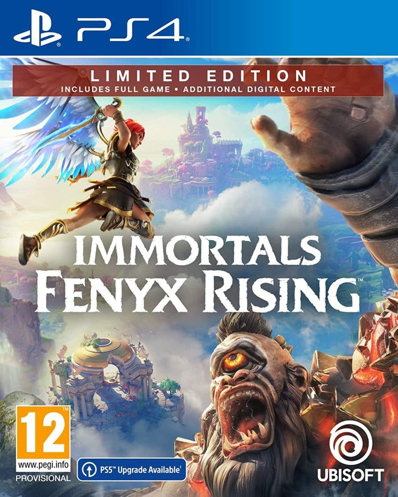
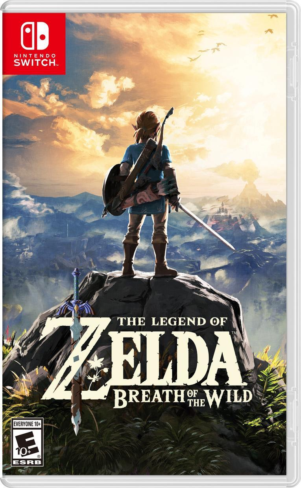

Bloodborne

Bloodborne nos lleva a la decrépita ciudad de Yharnam, cuyos habitantes han sido infectados por una misteriosa enfermedad sanguínea.
Immortals fenyx rising

Juega como Fenyx, una nueva semidiosa alada con la misión de salvar a los dioses griegos y a su hogar de una oscura maldición
Legend of zelda: breath of the wild

Nos presenta el título más ambicioso de la saga con un mundo abierto por explorar
Gears 5

Se centra en Kait Díaz (Laura Bailey), una forastera de ascendencia Locust. Como Kait, el jugador debe descubrir los orígenes del Enjambre
Remember me